Pokédex / #178
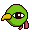
Xatu #178
PsychicFlying
In South America, it is said that its right eye sees the future and its left eye views the past.
Generation 2 · Johto
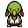
Stats
| Attack | 75 | |
|---|---|---|
| Defense | 70 | |
| Sp. Atk | 95 | |
| Sp. Def | 70 |
In the wild
| Wild level | 40–50 |
|---|---|
| HP | 65 |
| Experience | 12 |
| Egg groups | Flying |
Evolution
- Evolves from Natu at level 35.
Moves
| Level | Move | Type | Category | Power | Energy | Cooldown | Effect | |
|---|---|---|---|---|---|---|---|---|
| 1 | Tackle | Normal | Physical | 15 | 15 | 1s | Tackle is one of the most common and basic moves a Pokemon learns. It deals damage with no additional effects. | |
| 5 | 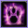 | Peck | Flying | Physical | 35 | 35 | 6s | Peck inflicts damage and has no secondary effect. |
| 10 | 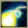 | Confuse Ray | Ghost | Status | – | 50 | 9s | Confuse Ray causes the target to become confused. |
| 15 | 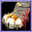 | Drill Peck | Flying | Physical | 80 | 80 | 12s | Drill Peck inflicts damage and has no secondary effect. |
| 20 | 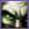 | Ominous Wind | Ghost | Special | 60 | 100 | 22s | Ominous Wind inflicts damage and has a 10% chance of raising all of the user's stats by one stage. |
| 25 | 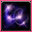 | Psychic | Psychic | Special | 90 | 100 | 21s | Psychic deals damage and has a 10% chance of lowering the target's Special Defense by one stage. |
| 30 | 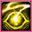 | Psycho Shift | Psychic | Status | – | 100 | 100s | Psycho Shift transfers any non-volatile status ailment from the user to the target, curing the user in the process. It will not transfer volatile status ailments (confusion, etc.). |
| 40 | 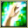 | Wish | Normal | Status | – | 100 | 90s | The turn Wish is used, the user will make a wish. At the end of the next turn, the Pokemon will be healed by half its own maximum HP. |
| 45 | Night Shade | Ghost | Special | 80 | 80 | 12s | Night Shade deals damage and has no secondary effect. | |
| 50 | 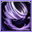 | Air Slash | Flying | Special | 75 | 80 | 17s | Air Slash deals damage and has a 30% chance of causing the target to flinch. |
| 55 | 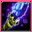 | Future Sight | Psychic | Special | 120 | 120 | 15s | Future Sight deals damage, but does not hit until two turns after the move is selected. |
| 60 | 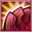 | Zen Headbutt | Psychic | Physical | 80 | 80 | 15s | Zen Headbutt deals damage and has a 20% chance of causing the target to flinch. |
| 65 | 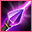 | Psyshock | Psychic | Special | 80 | 85 | 12s | The user materializes an odd psychic wave to attack the target. This attack does physical damage. |
| 70 | Stored Power | Psychic | Special | 20 | 80 | 18s | Stored Power deals variable damage depending on the stat modifications of the user. When the user has no stat modifications, Stored Power's base power is 20. Its power increases by 20 for each stat boost the user has. |
Field abilities
FindFlashBlinkTeleportFly
Special abilities
SynchronizeEarly Bird
Egg moves
Ally SwitchDrill PeckFeather DanceFaint AttackHazeQuick AttackRefreshRoostSimple BeamSkill SwapSteel WingSucker PunchSynchronoiseZen Headbutt
Technical machines
Aerial AceBideCalm MindDouble EdgeDouble TeamDream EaterGiga DrainHyper BeamLight ScreenMimicNightmarePsychicRageRain DanceReflectRestShadow BallSolar BeamSteel WingSubstituteSwiftThunder WaveToxic
Drops
| Item | Amount | Chance | |
|---|---|---|---|
| bunch of wheat | 1–4 | 83.3% | |
| feather | 1 | 55.6% | |
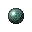 | black orb | 1 | 50% |
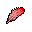 | downy feather | 1 | 25% |
| night orb | 1 | 16.7% | |
| dark crystal | 1 | 5% | |
| luminous orb | 1 | 5% | |
| onigiri | 1–5 | 5% | |
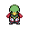 | xatu doll | 1 | 0.1% |
| Mind Plate | 1 | 0.05% | |
| Sky Plate | 1 | 0.05% | |
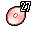 | TM 27 | 1 | 0.01% |
| held sharp beak | 1 | 0.01% | |
| held twisted spoon | 1 | 0.01% |